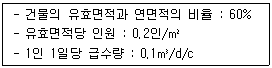
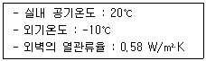
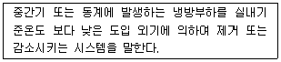
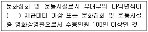
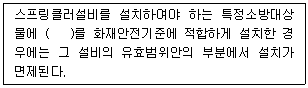
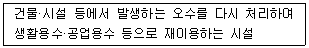

건축설비산업기사 (2010-03-07 기출문제)
1과목: 건축일반
1. 사무소 건축 계획에서 계단 배치에 관한 설명으로 옳지 않은 것은?
- 주요계단은 되도록 1층 주요 출입구 근처에 배치한다.
- 비상계단은 주요계단과 같은 위치에 집중 배치한다.
- 계단은 엘리베이터 홀에 근접하도록 한다.
- 2개소 이상의 계단을 배치한다.
(정답률: 79%)

2. 재래식 지붕틀 구조에서 지붕의 하중이 크고 간사이가 넓을 때 그 중간에 기둥을 세우고 이 기둥과 지붕보 사이에 직각으로 설치하는 것을 무엇이라 하는가?
- 서까래
- 버팀대
- 베개보
- 중도리
(정답률: 55%)
3. 다음 중 사무소 건축의 최상층을 2중 천장으로 하는 가장 주된 이유는?
- 단열과 옥상 슬래브의 경사 확보
- 최상층으로의 직사일광 유입 차단
- 외부공간으로부터의 소음 차단
- 최상층에서의 외부 조망 확보
(정답률: 70%)
4. 단독주택의 기본계획방향에서 건축설비와 가장 밀접한 관계가 있는 부분은?
- 아름다운 공간 구성
- 가족본위의 주거
- 쾌적한 생활공간
- 개인적인 공간의 확보
(정답률: 70%)
5. 목구조의 계단에 설치되는 멍에에 관한 서명으로 옳지 않은 것은?
- 계단의 나비가 약 1m 이상인 경우 설치한다.
- 디딤판의 휨과 보행잡음을 방지하기 위하여 설치한다.
- 디딤판의 진동을 방지하기 위하여 강도가 있는 각재를 사용한다.
- 계단을 오르내리기에 편리하고 조형적 안정성의 목적으로 설치한다.
(정답률: 75%)
6. 종합병원의 건물군을 3가지로 분류할 때 그 분류와 가장 거리가 먼 것은?
- 부속진료부
- 외래부
- 입원수속부
- 병동부
(정답률: 66%)
7. 아파트의 단면형식에 의한 분류에 속하지 않는 것은?
- 홀형(hall type)
- 플랫형(flat type)
- 메조넷형(maisonette type)
- 트리플렉스형(triplex type)
(정답률: 54%)
8. 철골조의 관련한 용어와 가장 거리가 먼 것은?
- 베이스 플레이트(base plate)
- 스캘럽(scallop)
- 스택조인트(stack joint)
- 뒷댐재(backing strip)
(정답률: 41%)
9. 학교의 운영방식에 대한 설명 중 옳지 않은 것은?
- 종합교실형은 교실수와 학급수가 일치하며 초등학교 저학년에 적합하다.
- 교과교실형은 학생의 이동이 심하고 이동에 대한 동선에 주의해야 한다.
- 플래툰형은 학급의 과밀해소를 위해 활용하는 방식으로 별도의 시설이 필요치 않으며 적은 교사를 갖고도 운영할 수 있다.
- 달톤형은 학급과 학년을 없애고 각자의 능력에 따라 교과를 선택하고 일정한 교과가 끝나면 졸업하는 형태이다.
(정답률: 72%)
10. 은행의 공간 및 평면 계획 시 유의할 점으로 옳지 않은 것은?
- 출입문은 도난방지상 바깥여닫이로 하는 것이 타당하다.
- 겨울철 기온이 낮은 우리나라에서는 주출입구에 전실(前室)을 설치한다.
- 큰 건물의 경우에도 고객출입구는 되도록 1개소로 한다.
- 업무내부의 일의 흐름은 되도록 고객이 알기 어렵게 한다.
(정답률: 74%)
11. 이중복도형 병동에 관한 설명으로 옳지 않은 것은?
- 병실의 배치가 용이하다.
- 간호가 신속히 이루어지고 간호능력이 향상된다.
- 설비와 서비스부분을 집중시킬수 없다.
- 코어부에 인공조명과 기계환기 설비가 필요하다.
(정답률: 72%)
12. 표준형벽돌(190mm×90mm×57mm)로 벽체를 1.58로 쌓을 때 벽체 두께는?
- 125mm
- 160mm
- 190mm
- 290mm
(정답률: 56%)
13. 벽돌조에서 창문나비가 2.4m인 경우 인방구조는 어떻게 설치하는 것이 합리적인가?
- 벽돌로 평차리를 쌓는다.
- 외부는 벽돌 세워쌓기, 내부는 평아치를 쌓는다.
- 철근콘크리트 인방보를 설치한다.
- 석재 인방보를 설치한다.
(정답률: 71%)
14. 다음 중 홀을 두 줄 파서 문 두짝을 달고 문 한 짝을 다른 한 짝 옆에 밀어 붙이는 구조로 된 것은?
- 여닫이문
- 자재문
- 미서기문
- 접문
(정답률: 69%)
15. 병원의 공조 설계시 공기재순환을 시키지 않는 등 가장 중요하게 다루어야 할 실은?
- 일반병실
- 물리 치료실
- 면회실
- 수술실
(정답률: 81%)
16. 조적벽체의 균열발생원인과 가장 거리가 먼 것은?
- 벽체배치의 불균형
- 지반의 부등침하
- 기초의 결함
- 팽창줄눈의 설치
(정답률: 69%)
17. 다음 중 석재 접합과 관련된 용어가 아닌 것은?
- 은장
- 적층고무
- 촉
- 반턱
(정답률: 74%)
18. 호텔의 평면계획에 대한 설명 중 옳지 않은 것은?
- 호텔의 기능적 분류에 의하면 관리부분, 공공부분, 숙박부분으로 나눌 수 있다.
- 숙박부분은 호텔의 가장 중요한 부분으로 이에 의해 호텔의 형태가 결정된다.
- 레지덴셜호텔의 객실은 여유있고 쾌적함을 주어야 하며, 공공부문은 충분한 면적을 할당해야 한다.
- 리조트 호텔의 경우 부지의 제한으로 대지경계선에 따라 모양이 결정되기 쉬우나 시티 호텔의 경우 자유로운 형태로 디자인 할 수 있다.
(정답률: 75%)
19. 상점의 정면(facade) 구성에 이용되는 5가지 광고요소에서 첫 번째 요소에 해당하는 것은?
- Attention
- Interest
- Desire
- Memory
(정답률: 61%)
20. 조명에 악센트를 주며 상품전시를 대상으로 하여 스포트라이트가 사용되는 조명은?
- 직접조명
- 간접조명
- 국부조명
- 반간접조명
(정답률: 75%)
2과목: 위생설비
21. 다음 중 위생기구 유니트의 요구조건과 가장 관계가 먼 것은?
- 배관이 방수층을 통과하지 않고 바닥 위에서 처리할 수 있어야 한다.
- 중량구조라야 하며 바닥 콘크리트와 일체 되어야 한다.
- 본관과의 배관접속이 쉽고, 유니트 내부의 배관도 복잡하지 않아야 한다.
- 현장 설치가 간단하고 제작 공정이 단순해야 한다.
(정답률: 62%)
22. 옥내소화전설비의 송수구에 대한 설명 중 옳지 않은 것은?
- 소방차가 쉽게 접근할 수 잇고 노출된 장소에 설치한다.
- 지면으로부터 높이 0.5m 이하의 위치에 설치한다.
- 구경 65m의 상구형 또는 단구형으로 한다.
- 송수구의 가까운 부분에 자동배수밸브 및 체크밸브를 설치한다.
(정답률: 45%)
23. 90℃의 온수 150kg에 10℃의 물 120kg을 혼합할 경우, 혼합수의 온도는?
- 약 38.7℃
- 약 44.6℃
- 약 54.4℃
- 약 60.2℃
(정답률: 53%)
24. 특수통기방식 중 소벤트 시스템에 대한 설명으로 옳지 않은 것은?
- 통기관은 신정통기관으로 하며, 통기수직관이 없다.
- 공기혼합이음쇠를 설치하지 않는 층에는 S자형의 오프셋을 설치하여 배수의 유속을 감소시키도록 한다.
- 공기혼합이음쇠는 배수가 배수수평주관에 원활하게 유입하도록 공기와 물을 분리하는 작용을 한다.
- 공기분리기는 횡주관에서의 수류에 선회력을 주어 관내 통기를 위한 공기 코어가 유지하도록 설계되어 있다.
(정답률: 32%)
25. 배관의 신축이음쇠의 종류가 아닌 것은?
- 스위블형
- 루프형
- 슬리브형
- 유니언형
(정답률: 63%)
26. LPG(액화석유가스)의 일반적인 특성에 대한 설명 중 옳지 않은 것은?
- 공기보다 무겁다.
- 불완전 연소에 의한 중독의 위험성이 있다.
- 연소시 이론공기량이 적으며, m3당 발열량이 LNG에 비해 낮다.
- 석유계의 가스 중 액화하기 쉬운 프로판, 부탄을 주로 하여 액화한 것이다.
(정답률: 66%)
27. 글로브 밸브(glove valve)에 대한 설명으로 옳은 것은?
- 게이트 밸브(gate valve)라고도 하며 유체의 흐름을 단속하는 대표적인 밸브이다.
- 유체에 대한 저항은 크나 개폐하 쉽고 유량조절이 용이하다.
- 밸브를 완전히 열면 유체 흐름의 단면적 변화가 없어서 마찰저항이 없다.
- 유체를 일정한 방향으로만 흐르게 하고 역류를 방지하는데 주로 사용된다.
(정답률: 58%)
28. 다음 중 용존 산소량을 의미하는 것은?
- DO
- BOD
- COD
- SS
(정답률: 43%)
29. 트랩이 구비해야 할 조건으로 옳은 것은?
- 수봉식이 아닌 것
- 가동부분이 있는 것
- 비닐호스에 의한 것
- 배수시에 자기 세정이 가능할 것
(정답률: 52%)
30. 배관을 통해 고가수조에 매시 25.2m3의 물을 유속 1.5m/s로 양수하려고 할 경우, 필요한 배관의 관경은?
- 약 65 mm
- 약 70 mm
- 약 77 mm
- 약 81 mm
(정답률: 52%)
31. 부패탱크 방식의 정화조에서 1차 처리 장치인 부패조에 주로 이용되는 미생물은?
- 혐기성 박테리아
- 호기성 박테리아
- 곰팡이 균
- 천적
(정답률: 63%)
32. 회전차 주위에 디퓨저인 안내 날개를 가지고 있는 터보형 펌프는?
- 터빈 펌프
- 블류트 펌프
- 베인 펌프
- 마찰 펌프
(정답률: 61%)
33. 급수방식 중 고가수조방식에 대한 설명으로 옳은 것은?
- 대구모의 급수 수요에는 대응할 수 없다.
- 급수 공급 압력의 변화가 심하고 취급이 까다롭다.
- 단수시에도 일정량의 급수를 계속할 수 있다.
- 위생성 및 유지·관리 측면에서 가장 바람직한 방식이다.
(정답률: 60%)
34. 호텔 및 식당의 주방 등에서 배출되는 세정배수 중 유지분을 포집하도록 한 포집기는?
- 그리스 포집기
- 오일 포집기
- 헤어 포집기
- 플라스터 포집기
(정답률: 58%)
35. 기구 배수관의 최소 관경으로 옳지 않은 것은?
- 대변기 : 75mm
- 세면기 : 25mm
- 소변기(스툴형) : 50mm
- 세탁용싱크 : 40mm
(정답률: 37%)
36. 다음과 같은 조건에 있는 연면적 3,000m2의 사무소 건물에 필요한 1일 급수량은?

- 3.6 m3/d
- 6 m3/d
- 36 m3/d
- 60 m3/d
(정답률: 50%)
37. 세정밸브(Flush valve)식 대변기에 관한 설명 중 옳지 않은 것은?
- 유수음이 크다.
- 연속사항요 불가능하다.
- 급수관경은 25mm 이상 필요하다.
- 일반 가정용으로는 거의 사용되지 않는다.
(정답률: 78%)
38. 급탕배관계통 중 총손실열량이 41900 kJ/h 일 때 순환수량은? (단, 물의 밀도는 1 kg/L, 비열은 4.19 kJ/kg·K, 급탕온도는 60℃, 반탕온도는 55℃ 이다.)
- 3.3 L/min
- 33.3 L/min
- 200 L/min
- 2000 L/min
(정답률: 49%)
39. 옥외소화전이 4개 있을 경우 옥외소화전설비의 수원의 저수량은 최소 얼마 이상이 되도록 하여야 하는가?
- 12m3
- 14m3
- 16m3
- 18m3
(정답률: 56%)
40. 물의 온도상승에 따른 밀도의 차에 의해 온수를 순환시키는 급탕순환방식은?
- 중력식
- 강제식
- 단관식
- 복관식
(정답률: 67%)
3과목: 공기조화설비
41. 다음과 같은 조건에 있는 외벽의 단위면적당 전열 손실열량은?

- 5.8 W
- 11.6 W
- 17.4 W
- 58 W
(정답률: 68%)
42. 증기난방에 사용되는 부속기기 중 플로트 트랩에 대한 설명으로 옳지 않은 것은?
- 다량의 응축수는 처리할 수 있으나 소량의 응축수는 처리할 수 없다.
- 넓은 범위의 압력과 급격한 압력변화에도 원활히 작동한다.
- 증기해머에 의해 내부손상을 입을 수 있다.
- 구조상 동결의 우려가 있는 곳에는 적합하지 않다.
(정답률: 56%)
43. 여름철 실내에 위치한 냉장고 안의 습도는 어떤 상태인가?
- 상대습도는 높고 절대습도는 낮다.
- 상대습도는 낮고 절대습도는 높다.
- 상대습도는 높고 절대습도도 높다.
- 상대습도와 절대습도는 동일하다.
(정답률: 55%)
44. 아네모스탯 천장취츨구에 대한 설명으로 옳지 않은 것은?
- 학산형 취출구의 일종이다.
- 몇 개의 콘(cone)이 있어서 1차 공기에 의한 2차 공기의 유인성능이 좋다.
- 확산반경이 크고 도달거리가 짧아 천장취출구로 많이 사용된다.
- 라인형 취출구의 일종으로 선의 개념을 통하여 인테리어 디자인에서 미적인 감각을 살릴 수 있다.
(정답률: 72%)
45. 다음 중 송풍기의 크기를 나타내는 것은?
- 송풍기 번호
- 송풍기 회전수
- 송풍기 소요마력
- 송풍기 정압
(정답률: 48%)
46. 흡수식 냉동기에 대한 설명 중 옳지 않은 것은?
- 열에너지에 의해 냉동효과를 얻는다.
- 구조는 증발기, 압축기, 발생기, 팽창장치로 구성되어 있다.
- 냉방용의 흡수식 냉동기는 물과 브롬화리튬(LiBr)의 혼합용액을 사용하며, 물이 냉매의 역할을 한다.
- 발생기의 형식에 따라 단효용식과 2중효용식이 있다.
(정답률: 50%)
47. 복사난방에 대한 설명으로 옳지 않은 것은?
- 매립코일이 고장나면 수리가 어렵다.
- 천장고가 높은 공장이나 외기침입이 있는 곳에서도 난방감을 얻을 수 있다.
- 실내에 방열기를 설치하지 않으므로 바닥이나 벽면을 유용하게 이용할 수 있다.
- 열용량이 작아 방열량 조절이 용이하며 간헐난방에 적합하다.
(정답률: 64%)
48. 다음 중 독립된 환기계통으로 하여야 하는 곳은?
- 식당
- 사무실
- 강의실
- 설계실
(정답률: 75%)
49. 다음 중 존별 개별제어가 가장 곤란한 공조 방식은?
- 2중덕트 방식
- 멀티존 유닛 방식
- 단일덕트 변풍량 방식
- 단일덕트 정풍량 방식
(정답률: 52%)
50. 공기조화용 덕트로 원형이 아닌 정방형을 사용하는 가장 주된 이유는?
- 층고를 낮출 수 있다.
- 소음을 적게 할 수 있다.
- 마찰저항을 줄일 수 있다.
- 송풍기의 필요 동력을 낮출 수 있다.
(정답률: 62%)
51. 냉방부하의 발생원인 중 잠열부하를 포함하고 있는 것은?
- 덕트로부터의 취득열량
- 유리로부터의 취득열량
- 인체로부터의 취득열량
- 벽체로부터의 취득열량
(정답률: 71%)
52. 실내 취득 열량이 30,000 W 일 때 실내온도를 25℃로 유지하기 위해 송풍하는 공기의 양은? (단, 송풍하는 공기의 온도는 17℃, 공기의 비열 1.01 kJ/kg·K, 공기의 밀도 1.2 kg/m3 이다.)
- 9475.5 m3/h
- 10335.3 m3/h
- 11138.6 m3/h
- 12⑤5.0 m3/h
(정답률: 53%)
53. 실내공기오염농도의 종합적 지표로서 CO2농도로 사용하는 이유로 가장 알맞은 것은?
- CO2는 조금만 있어도 인체에 치명적인 해를 주므로
- CO2량은 측정하기가 쉬우므로
- CO2에 비례하여 다른 오염농도도 증가되므로
- CO2는 공기보다 비중량이 커서 실 바닥에 누적되므로
(정답률: 72%)
54. 벽체의 열전도율 단위로 알맞은 것은?
- kJ/m·h
- W/m·K
- W/m2
- W/m2·K
(정답률: 40%)
55. 2개 이상의 엘보를 사용하여 이음부의 나사 회전을 이용해서 배관의 신축을 흡수하는 신축이음쇠는?
- 루프형
- 스위블형
- 벨로우즈형
- 슬리브형
(정답률: 66%)
56. 송풍기에 대한 설명 중 옳지 않은 것은?
- 다익형은 다른 형식에 비해 동일 용량에 대해서 회전수가 가장 많다.
- 축류형은 낮은 풍압에 많은 풍량을 송풍하는데 적합하다.
- 훅고형은 효율이 높고 논오버로드(nonover load) 특성이 있다.
- 방사형은 자기청소(self cleaning)의 특성이 있다.
(정답률: 61%)
57. 다음의 공기조화방식 중 에너지 절약상 가장 불리한 것은?
- 팬코일 유니트 방식
- 가변풍량 방식
- 유인 유니트 방식
- 멀티죤 유니트 방식
(정답률: 33%)
58. 내경 50mm인 원형관 속을 평균유속 2m/s로 물이 흐르고 있다. 관의 길이를 10m 관마찰계수를 0.02로 할 경우 마찰손실은?
- 0.46 mAq
- 0.64 mAq
- 0.82 mAq
- 0.93 mAq
(정답률: 52%)
59. 다음의 풍량제어법 중 축동력이 가장 적게 소요되는 것은?
- 토출댐퍼제어
- 흡입댐퍼제어
- 흡입베인제어
- 회전수제어
(정답률: 48%)
60. 직교류형 냉각탑의 특징을 대향류형 냉각탑의 특징과 비교하여 설명한 내용 중 옳지 않은 것은?
- 구조상 점검·보수가 용이하다.
- 팬 소요동력이 적다.
- 탑내 기류분포가 나쁘다.
- 설치면적이 적고 냉각효율이 높다.
(정답률: 43%)
4과목: 건축설비관계법규
61. 건축법상 주요 구조부가 아닌 것은?
- 보 및 지붕틀
- 바닥 및 주계단
- 옥외계단 및 기초
- 기둥 및 내력벽
(정답률: 65%)
62. 지하층의 구조와 관련된 기준에서 거실의 바닥면적의 합계로 설치기준을 정하는 것은?
- 환기설비
- 식수공급을 위한 급수전
- 피난계단 또는 특별피난계단 설치
- 비상탈출구 및 환기통설치
(정답률: 52%)
63. 다음 소방시설 중 소화설비에 해당되는 것은?
- 자동화재탐지설비
- 옥외소화전설비
- 소화수조
- 연결송수관설비
(정답률: 64%)
64. 문화 및 집회시설 중 공연장의 개별관람석의 바닥면적이 2,000m2일 경우, 각 출구의 유효너비를 1.8m로 한다면, 설치하여야 하는 관람석 출구의 최소 개수는?
- 5개
- 6개
- 7개
- 8개
(정답률: 55%)
65. 건축물의 건축허가 신청시 에너지 절약 계획서를 제출해야 하는 대상건축물에 속하지 않는 것은?
- 제1종 근린생활시설 중 목욕장으로서 당해 용도에 사용되는 바닥면적 합계가 5백제곱미터 이상인 건축물
- 교육연구시설 중 연구소로서 당해 용도에 사용되는 바닥면적의 합계가 3천제곱미터 이상인 건축물
- 공동주택 중 기숙살서 그 용도에 사용되는 바닥면적의 합계가 2천제곱미터 이상인 건축물
- 운동시설 중 실내수영장으로서 당해 용도에 사용되는 바닥면적 합계가 3백제곱미터 이상인 건축물
(정답률: 49%)
66. 다음은 건축물의 에너지절약 설계기준 상의 용어의 정의이다. 이에 알맞은 용어는?

- 이코노마이저시스템
- 설비형태양열시스템
- 태양광발전시스템
- 지열시스템
(정답률: 75%)
67. 건축물을 건축하거나 대수선하는 경우 국토해양부령으로 정하는 구조기준 등에 따라 그 구조의 안전을 확인하여야 하는 대상 건축물에 속하지 않는 것은?
- 층수가 3층인 건축물
- 높이가 13미터인 건축물
- 처마높이가 8미터인 건축물
- 기둥가 기둥 사이의 거리가 10미터인 건축물
(정답률: 59%)
68. 다음의 제연설비를 설치하여야 하는 특정소방대상물과 관련된 기준 내용 중 ( ) 안에 알맞은 것은?

- 100
- 150
- 200
- 300
(정답률: 58%)
69. 배연설비를 국토해양부령으로 정하는 기준에 따라 설치하여야 하는 대상에 속하지 않는 것은? (단, 6층 이상인 건축물의 경우)
- 공동주택의 거실
- 종교시설의 거실
- 업무시설의 거실
- 장례식장의 거실
(정답률: 65%)
70. 방염성능기준 이상의 실내장식물 등을 설치하여야 하는 특정소방대상물에 속하지 않는 것은?
- 근린생활시설 중 안마시술소
- 근린생활시설 중 헬스클럽장
- 문화집회 및 운동시설 중 수영장
- 숙박이 가능한 청소년시설
(정답률: 68%)
71. 방화구힉의 설치기준 내용으로 옳지 않은 것은?
- 3층 이상의 층은 층마다 구획한다.
- 지하층은 바닥면적 200m2 이내마다 구획한다.
- 10층 이하의 층은 바닥면적 1,000m2 이내마다 구획한다.
- 11층 이상의 층은 바닥면적 200m2 이내마다 구획한다.
(정답률: 50%)
72. 계단을 대체하여 설치하는 경사로의 경사도는 최대 얼마를 넘지 않도록 하여야 하는가?
- 1 : 6
- 1 : 8
- 1 : 10
- 1 : 12
(정답률: 70%)
73. 높이 31m를 넘는 각 층의 바닥면적이 5,000m2인 사무소 건축물에 설치하여야 하는 비상용 승강기의 최소 대수는?
- 1대
- 2대
- 3대
- 4대
(정답률: 47%)
74. 비상용승강기 승강장의 구조에 관한 기준 내용으로 옳지 않은 것은?
- 승강장의 바닥면적은 비상용승강기 1대에 대해 6제곱미터 이상으로 할 것
- 피난층에 있는 승강장의 출입구로부터 도로 또는 공지에 이르는 거리가 35미터 이하일 것
- 승강장은 각층의 내부와 연결될 수 있도록 하되, 그 출입구에는 갑종방화문을 설치할 것
- 벽 및 반자가 실내에 접하는 부분의 마감재료는 불연재료로 할 것
(정답률: 65%)
75. 개인하수처리시설의 설치기준 내용으로 옳지 않은 것은?
- 개인하수처리시설의 규모는 처리대상 오수의 3분의 2 이상을 처리할 수 있는 규모 이상이어야 한다.
- 시설물은 구조적으로 안정되어야 하고 천정·바닥 및 벽은 방수되어야 한다.
- 오수처리시설은 유입량을 24시간 균등 배분할 수 있고 12시간 이상 저류할 수 있는 유량조정조를 설치하여야 한다.
- 오수배관은 폐쇄, 역류 및 누수를 방지할 수 있는 구조이어야 한다.
(정답률: 42%)
76. 5가구가 거주하는 주거용 건축물에 설치하는 음용수용 급수관의 최소 지름은?
- 20 mm
- 25 mm
- 32 mm
- 40 mm
(정답률: 58%)
77. 옥내소화전설비를 설치하여야 하는 특정소방대상물의 연면적 기준은? (단, 지하가 중 터널 제외)
- 1,500 m2 이상
- 3,000 m2 이상
- 4,500 m2 이상
- 6,000 m2 이상
(정답률: 57%)
78. 다음의 스프링클러설비의 설치면제에 관한 설명 중 ( ) 안에 들어갈 시설로 알맞은 것은?

- 연결송수관설비
- 연소방지설비
- 상수도소화용수설비
- 물분무등소화설비
(정답률: 75%)
79. 자동화재탐지설비를 설치하지 않아도 되는 것은?
- 연면적이 1500m2인 공동주택
- 연면적이 600m2인 의료시설
- 연면적이 1500m2인 학교
- 연면적이 1500m2인 판매시설 및 영업시설
(정답률: 38%)
80. 하수도법에서 다음과 같이 정의되는 용어는?

- 하수도
- 개인하수도
- 공공처리수재이용시설
- 중수도
(정답률: 66%)